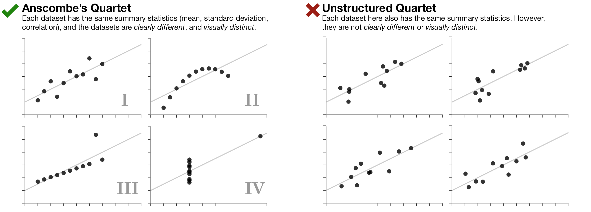
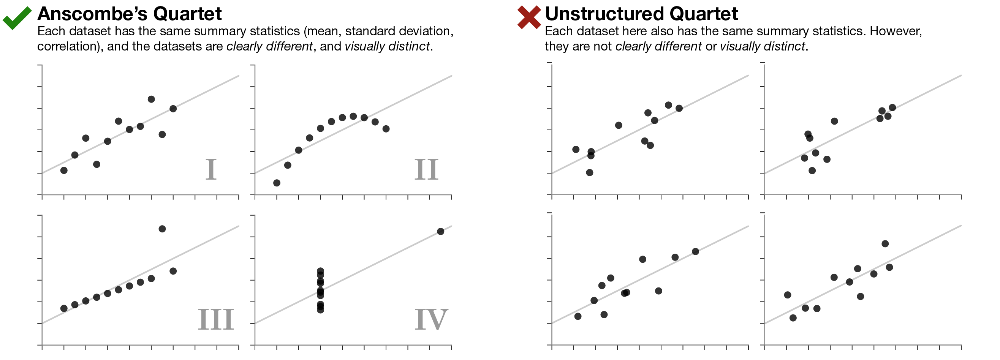
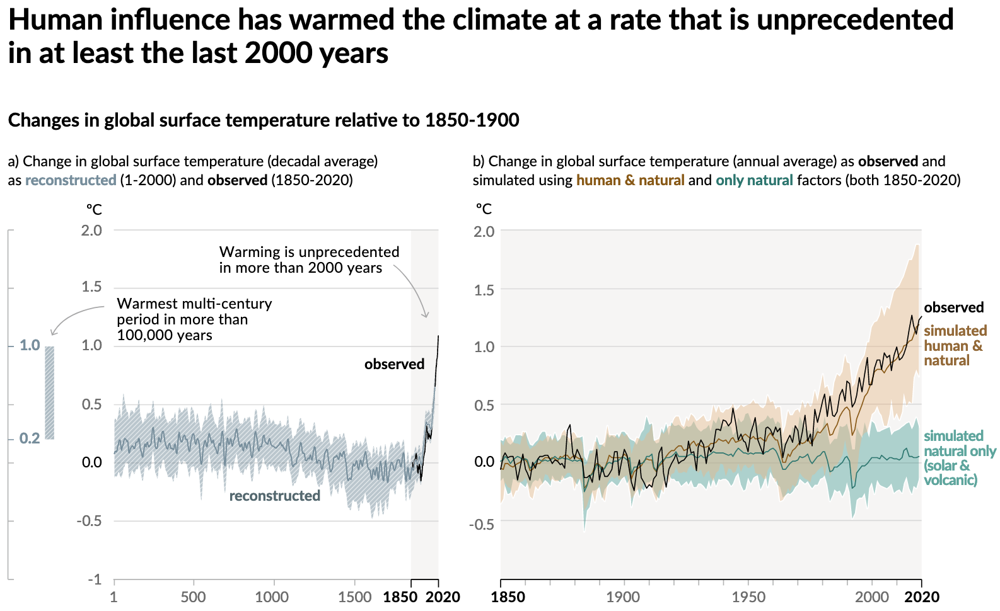
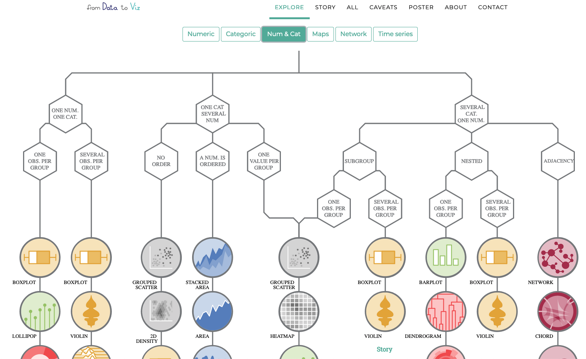
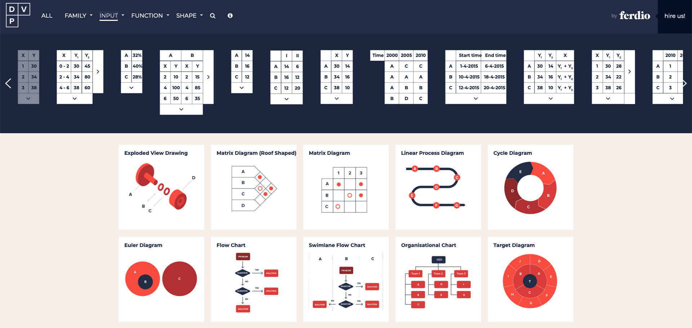
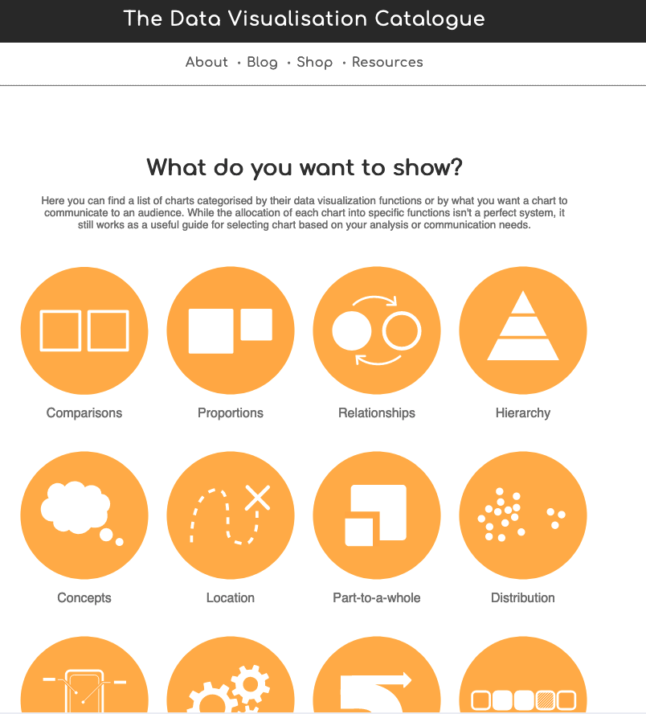
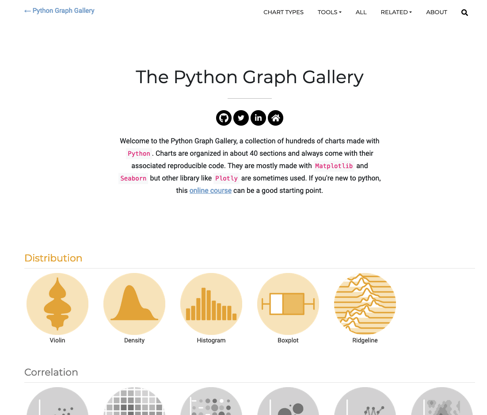
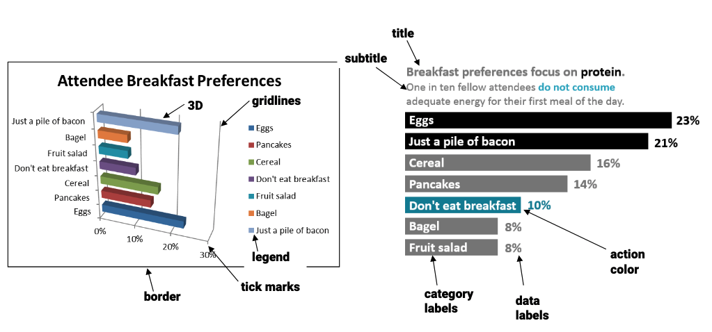
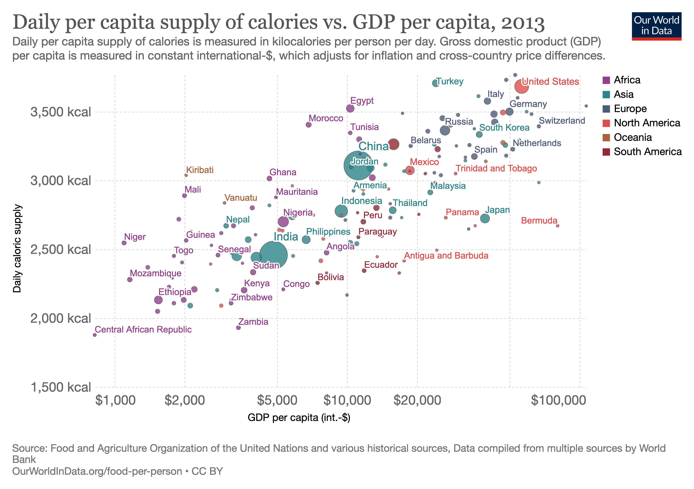

Introduction to Ag Informatics
Module 2, Lecture 3Joe Dvorak, joe.dvorak@uky.edu
Fall 2021
Outline for Today
- The value of exploration
- Good data visualizations
- Data storytelling
"The greatest value
of a picture
is when it forces us to notice
what we never expected to see."
John W. Tukey, Exploratory Data Analysis, 1977
The Datasaurus Dozen
Open a Jupyter notebook.
Let's inspect (plot, describe)!
What do you notice?
The Value of Exploration

 

Matejka & Fitzmaurice, 2017, https://www.autodesk.com/research/publications/same-stats-different-graphs.
Cairo, 2016, http://www.thefunctionalart.com/2016/08/download-datasaurus-never-trust-summary.html
Good Data Visualizations are...
- Truthful: Evidence based.
- Functional: Useful!
- Beautiful: Aesthetic & User-centered.
- Insightful: Reveals things that are hard to see.
- Enlightening: The path to knowledge.
Alberto Cairo, 2016, A Truthful Art.
A Truthful Viz
Fig SPM.1: History of global temperature change and causes of recent warming.
Download the data!
IPCC Summary for Policy Makers IPCC AR6WGI, https://www.ipcc.ch/report/ar6/wg1/downloads/report/IPCC_AR6_WGI_SPM.pdf
Viz Function: Data Type?
Viz Function: Data structure?
Viz Function: What to Highlight?
Python Possibilities
Python Plotting Libraries
| Matplotlib | Utility plotting library. |
| SeaBorn | 'Prettier' matplotlib. |
| Plotnine | ggplot2 style grammar. |
| Bokeh | Interactive visualizations. |
| Geopandas & Geoplot | Maps maps maps. |
Functional?
Beautiful?
Green & Emery, 2015, Data Visualization Checklist https://stephanieevergreen.com/data-visualization-checklist/
Insightful & Enlightening?
Roser & Ritchie. https://ourworldindata.org/food-supply#the-link-between-food-supply-and-prosperity/p>
Storytelling with Data
Activity: Data Storytelling
Explore a dataset.
Pick a story type.
- Factoid (Outlier): Why does this data point stand out from the others?
- Interaction (Correlation): Why do these data change with each other?
- Comparison: What is the meaningful difference between these parts?
- Change: What made this part of the data change from this to that?
- Personal: How does this data connect to the lives of the audience?
Mock up a Data Viz.
Plot, infographic, or data dashboard.
Learn More:
Homework
Quiz is due this week! It is posted on Canvas.
- Homework 2 is due September 24th
https://www.uky.edu/canvas/
Questions?
License

Introduction to Agricultural Informatics Course by Ankita Raturi, Purdue University and Modified by Joe Dvorak, University of Kentucky is licensed under a Creative Commons Attribution-NonCommercial-ShareAlike 4.0 International License.
- You are free to:
- Share — copy and redistribute the material in any medium or format
- Adapt — remix, transform, and build upon the material
- Under the following terms:
- Attribution — You must give appropriate credit, provide a link to the license, and indicate if changes were made. You may do so in any reasonable manner, but not in any way that suggests the licensor endorses you or your use.
- NonCommercial — You may not use the material for commercial purposes.
- ShareAlike — If you remix, transform, or build upon the material, you must distribute your contributions under the same license as the original.
- No additional restrictions — You may not apply legal terms or technological measures that legally restrict others from doing anything the license permits.